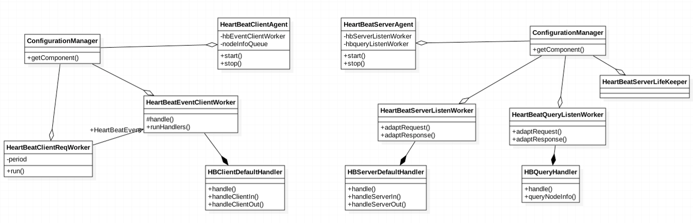

心跳机制
心跳机制是服务治理中，服务注册的基础。下面是心跳机制的类图：

如图所示，心跳机制可以分为客户端和服务端。
客户端主要负责生成心跳报文内容，之后通过Http发送给服务端，默认15秒发送一次心跳。
心跳报文内容：
- MSCP节点启动的module、Http服务；
- 上下文数据：OS信息、JDK信息、磁盘使用；
- 上下文性能数据：cpu、内存、连接数、端口流量、磁盘IO。
客户端生命周期： Alive（1*TTL， 绿色） —> Dying（2*TTL，红色） —> Dead（5*TTL， 灰色） —> Disappear（10*TTL）
服务端主要负责心跳报文内容的存储与多级服务注册中心的级联。
存储： CacheManager hash结构：
node.info: key: NodeInfo.id, value: NodeInfo JSON级联：多级服务注册中心。 而在某些特殊业务场景下，对服务注册信息更新延迟容忍度较低，这时，让心跳级联的计算节点也作为服务注册中心。